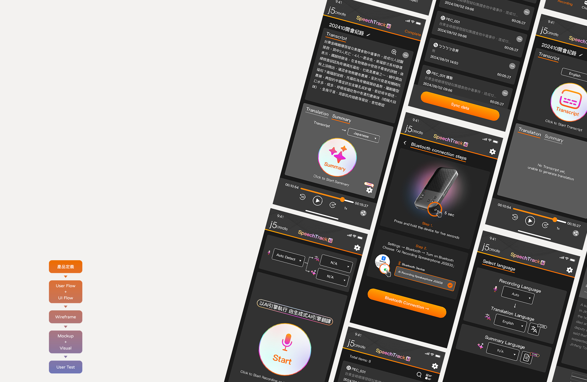
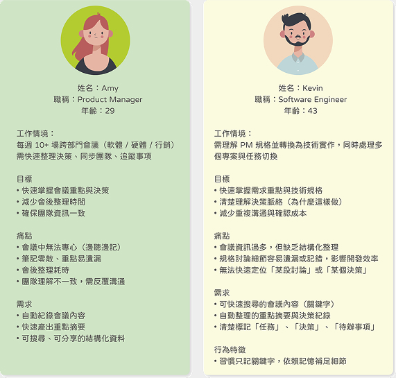
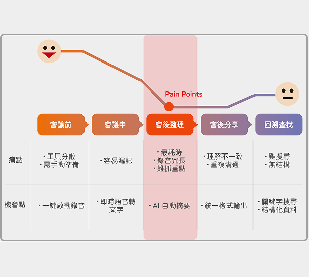
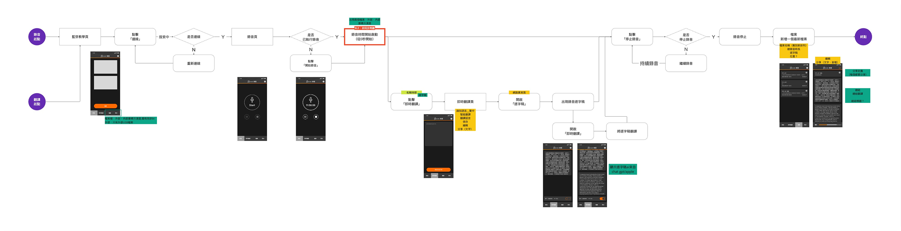
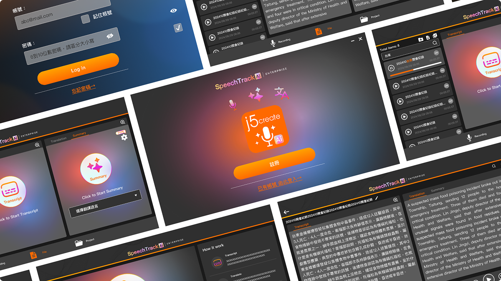
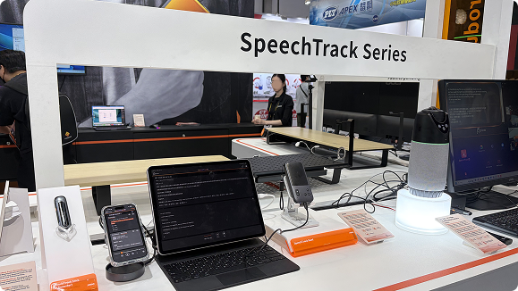
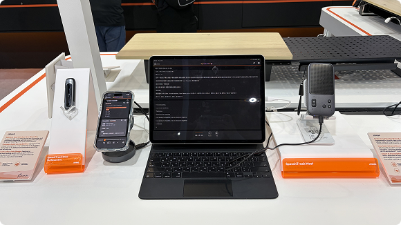
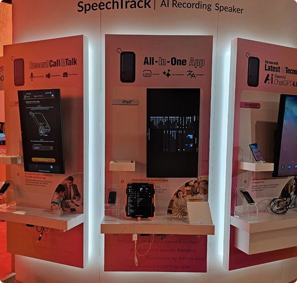

202410~持續進行中
j5 SpeechTrack 讓AI變得有溫度
本專案聚焦於「會議資訊碎片化」問題，透過整合錄音、即時轉寫、翻譯與 AI 摘要， 建立從對話到決策的完整資訊轉換流程，優化團隊協作與知識留存效率。

Background of the Problem
- 在會議、教學與專業諮詢場景中，大量重要資訊僅存在於即時對話中。
- 手動筆記容易遺漏重點、資訊零散且難以回溯，跨部門之間也因紀錄方式不同，導致理解落差與溝通成本提升。
- 語音資料缺乏有效整理機制，使內容無法被快速吸收、搜尋與再次應用。


Design Highlights
- 跨平台一致體驗 支援 iOS / Android / Windows / MacOS，讓不同裝置的使用者都能維持一致的操作體驗。
- 操作簡單直覺 考量使用者場景多為會議、訪談、即時筆記，介面設計強調「快速啟動錄音」「即時轉文字」「一鍵分享摘要」，減少操作步驟與認知負擔。
- AI 文字摘要 呈現如標示重點段落、摘要條列、標籤分類等，提升資訊吸收效率。
- 裝置連接與錄音狀態提示 讓使用者能清楚掌握錄音狀態、連線狀態與轉寫流程。
- 隱私與資料安全 錄音與轉文字內容涉及個資，需設計明確的權限提示與使用者授權流程，讓用戶了解資料儲存與傳輸方式。




